ICT-FaceKit
Parametric identities selected with maximin sampling to broaden shape diversity.
Main evaluationAn interactive benchmark for multimodal coding agents
One reference image. An editable program.
A test of how precisely agents can turn vision into geometry.
Observe subtle facial differences, write Blender code, inspect renders, and refine the geometry.
How evaluation works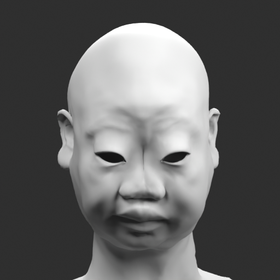
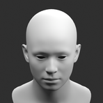
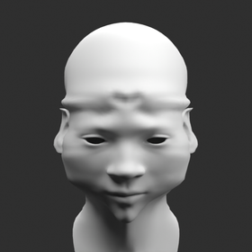
Real example: Qwen3.8 · ICT 073 · Easy setting. Reconstructions may still miss target-specific detail.
BlenderFaceBench evaluates the fine-grained 3D reconstruction abilities of multimodal coding agents. Given a single frontal, orthographic clay render, an agent writes and revises a Blender program to reconstruct a specific head. The challenge combines the perception of subtle craniofacial differences with continuous, executable geometric edits.
The benchmark contains 130 canonicalized heads across four data domains, with both an editable mean-head starting point and an empty-scene setting. Agents inspect multi-view renders of their own predictions; target meshes and target side views remain private. Final self-contained scripts are replayed in a clean environment and evaluated with whole-head, facial-region, and prior-relative metrics.
Across more than 2,100 container trials, we evaluate eight models in ten configurations and four agent harnesses. The strongest configuration improves strict F-score from 0.229 to 0.321 when editing the mean head. Starting from an empty scene remains difficult: only 3 of 200 runs on the matched ICT20 subset outperform a same-domain random-identity reference.
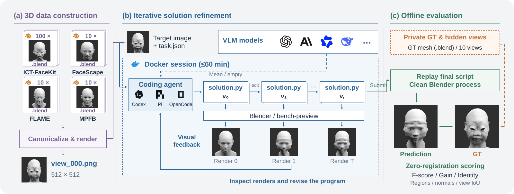
From parametric identities to real scans, statistical shapes, and character assets.
Parametric identities selected with maximin sampling to broaden shape diversity.
Main evaluationReal head scans that extend evaluation beyond the primary parametric domain.
Cross-domainA statistical head model with variation controlled through shape parameters.
Cross-domainCharacter assets with macro attributes and local morph targets.
Cross-domainAll targets share a canonical coordinate frame, fixed camera, clay material, and lighting. Each public reference is a 512 × 512 frontal image.
Begin with an editable ICT mean-head script. ICT targets use a leave-one-out mean, excluding the target itself.
Create the geometry from scratch. This setting jointly removes the initial shape, topology, and placement priors.
All 130 cases from the paper appendix, with paired frontal (left) and side (right, yaw −60°) renders.
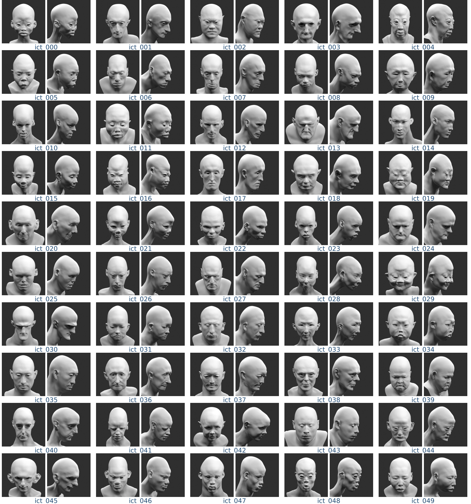
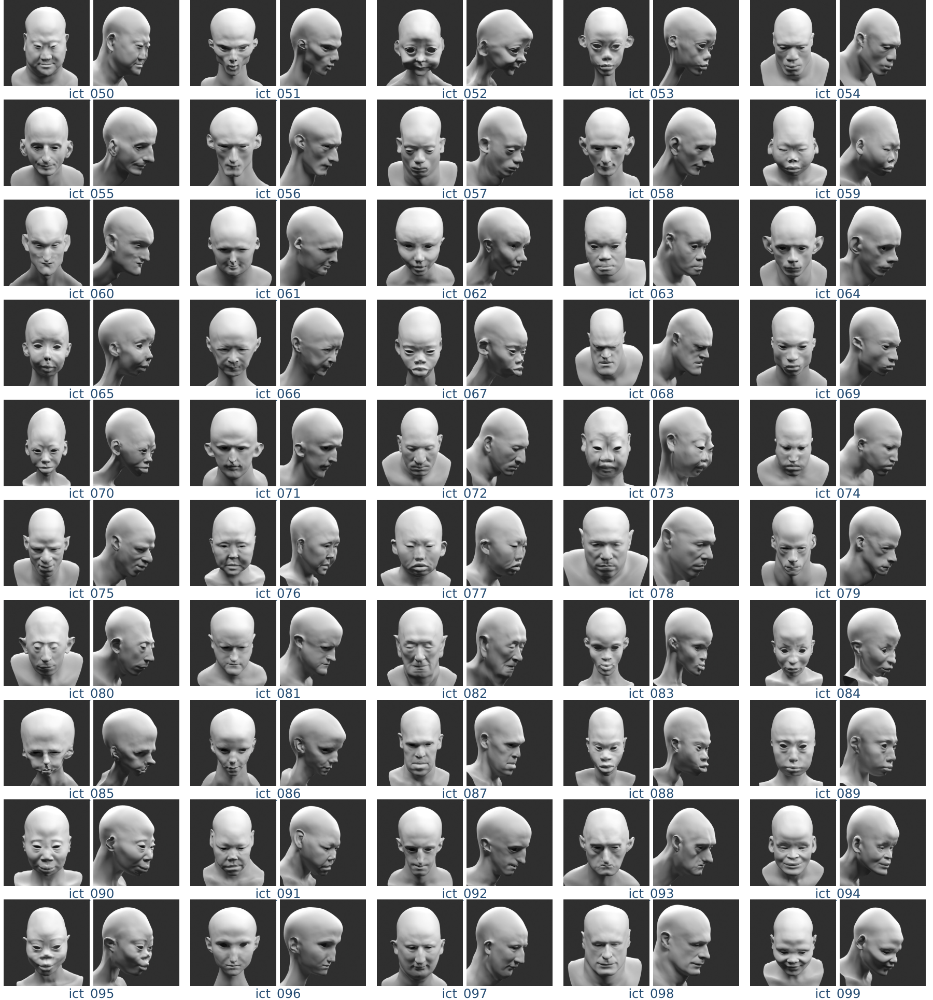
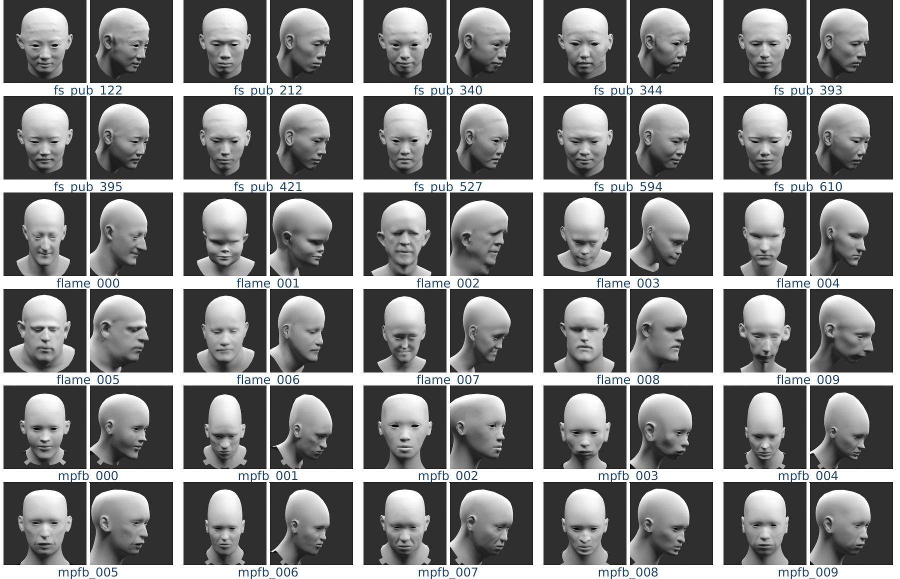
Click a preview to inspect the full-resolution image. Side views are shown for dataset illustration only; agents receive only the frontal target image during evaluation.
An interactive modeling session, followed by independent offline evaluation.
One frontal reference and public camera and coordinate conventions. No target geometry or side views.
Write solution.py, execute Blender, and inspect self-rendered views from chosen angles.
Replay the final self-contained program in a fresh, offline Blender process.
Compare the reconstructed surface with private ground truth in canonical space, without ICP.
F@0.5% measures surface agreement at a distance threshold of 0.5% of the target bounding-box diagonal, using 100,000 area-sampled points per surface.
Gain measures improvement over the starting geometry. Identity measures geometric advantage over same-domain random individuals.
Facial-region F-scores and normal errors complement whole-head quality. Silhouette IoU is evaluated from ten held-out target views.
Four evaluated harnesses: Terminus-2-Vision, Codex CLI, OpenCode, and Hermes Agent. The main results use Terminus-2-Vision.
Five complete agent editing trajectories, shown side by side. Follow each program from its starting geometry through successive edits to its final reconstruction.
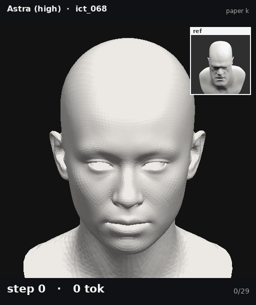
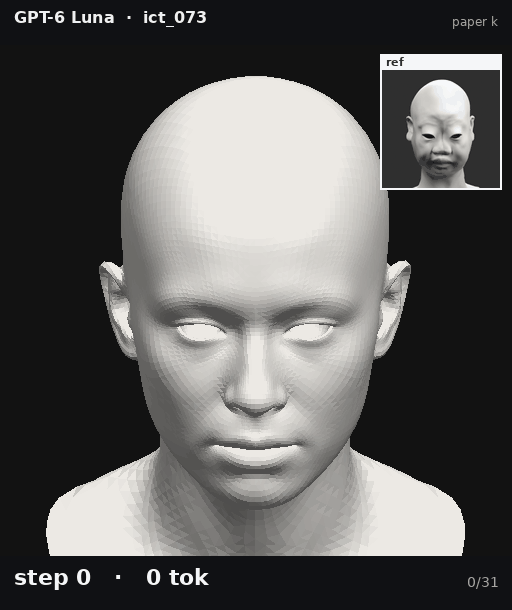
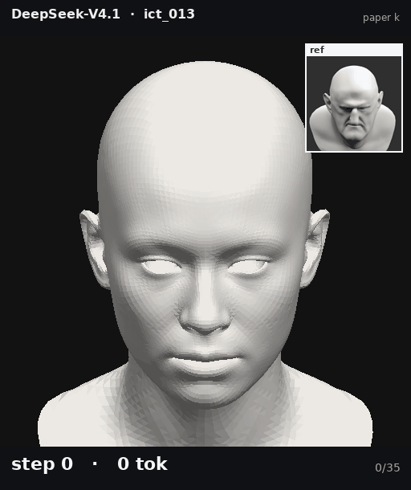
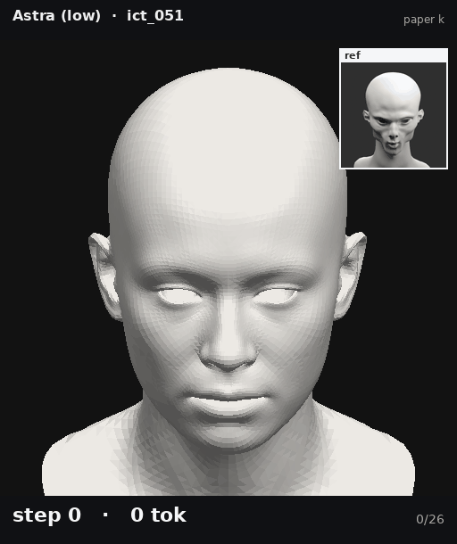
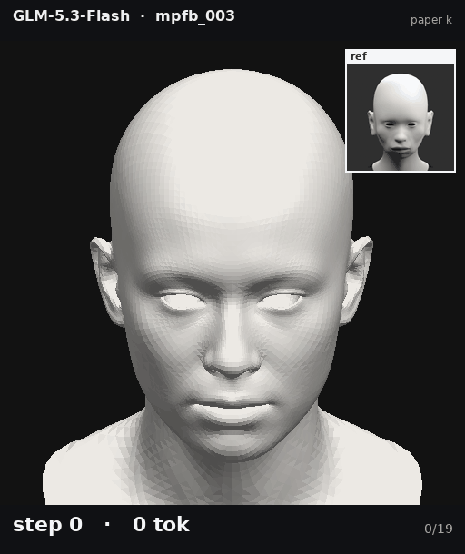
Each animation includes the target reference, editing step, and token usage. Edits can improve, damage, or recover a reconstruction; successive states do not imply monotonic improvement.
Swipe to compare all five trajectories →
Reported results from the project manuscript. Higher scores indicate better geometric matching.
| Model configuration | |||||
|---|---|---|---|---|---|
| GPT-6 Astra (high) | 0.321 | +0.118 | +0.174 | 0.411 | +0.200 |
| Claude Opus 5.5 (high) | 0.297 | +0.087 | +0.145 | 0.351 | +0.115 |
| GPT-6 Astra (low) | 0.281 | +0.065 | +0.126 | 0.358 | +0.126 |
| Claude Opus 5.5 (none) | 0.277 | +0.061 | +0.120 | 0.316 | +0.070 |
| Claude Sonnet 5.5 | 0.277 | +0.061 | +0.121 | 0.317 | +0.070 |
| GPT-6 Luna | 0.268 | +0.049 | +0.109 | 0.309 | +0.060 |
| DeepSeek-V4.1-Flash-1017 | 0.258 | +0.034 | +0.097 | 0.277 | +0.011 |
| GLM-5.3-Flash | 0.251 | +0.026 | +0.088 | 0.276 | +0.013 |
| Qwen3.8-27B | 0.245 | +0.019 | +0.082 | 0.259 | -0.011 |
| Gemini 3.5 Flash-Lite | 0.182 | -0.064 | +0.005 | 0.208 | -0.080 |
No matching models. Try another name.
Easy uses ICT100. Mean-head reference: F@0.5% = 0.229, Identity = +0.062, facial F = 0.262. Gain and Identity are computed per target before averaging.
| Reference | Whole-head F | Facial F |
|---|---|---|
| Mean-head start | 0.229 | 0.262 |
| DECA (neutral coarse identity mesh) | 0.219 | 0.256 |
| Hunyuan3D-2 (shape generation) | 0.190 | 0.177 |
| ICT 3DMM frontal fitting | 0.297 | 0.303 |
These methods use different priors and inference procedures. Easy agents receive editable mean geometry and an interactive budget; these are contextual references rather than identical-input comparisons.
Easy and Default cover different sample sets (100 vs. 20 targets). Their aggregate values are not a paired starting-point comparison. Positive Identity alone does not establish target-specific recovery: the mean head is already above the random-identity reference.
The strongest configuration raises strict F-score from 0.229 to 0.321, with facial Gain of +0.200. Editable geometry enables measurable improvement over the mean-head prior.
Across ten configurations on the same 20 ICT targets, only 3 of 200 empty-scene runs beat the same-domain random-identity reference. Cross-domain Gain can also reflect adaptation to a domain's typical head shape.
Higher reasoning settings improve mean-head editing for both evaluated flagship models. Within a configuration, naturally occurring runtime and token usage correlate weakly with Gain; no harness wins consistently across models.
Visual comparison, effective geometric editing, and final-state selection are distinct challenges. Local holes, folds, insufficient edits, and discarded intermediate improvements expose failures beyond script execution.
The evaluation framework and release materials are being prepared. Public links and the official citation will be added when available.